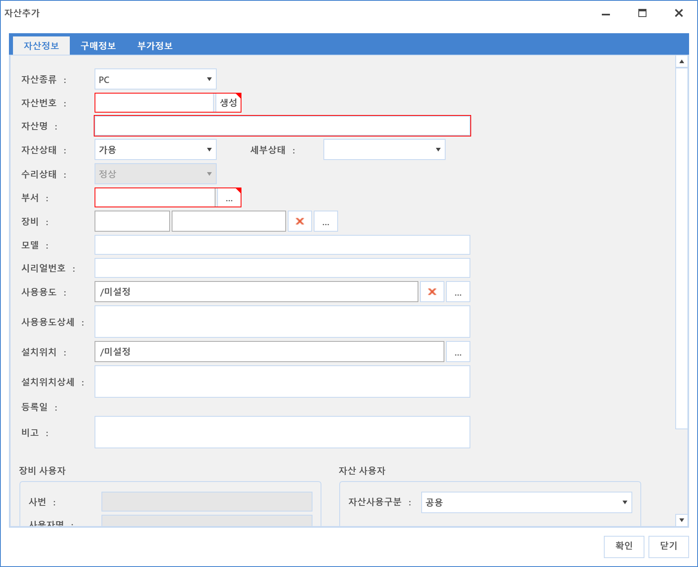
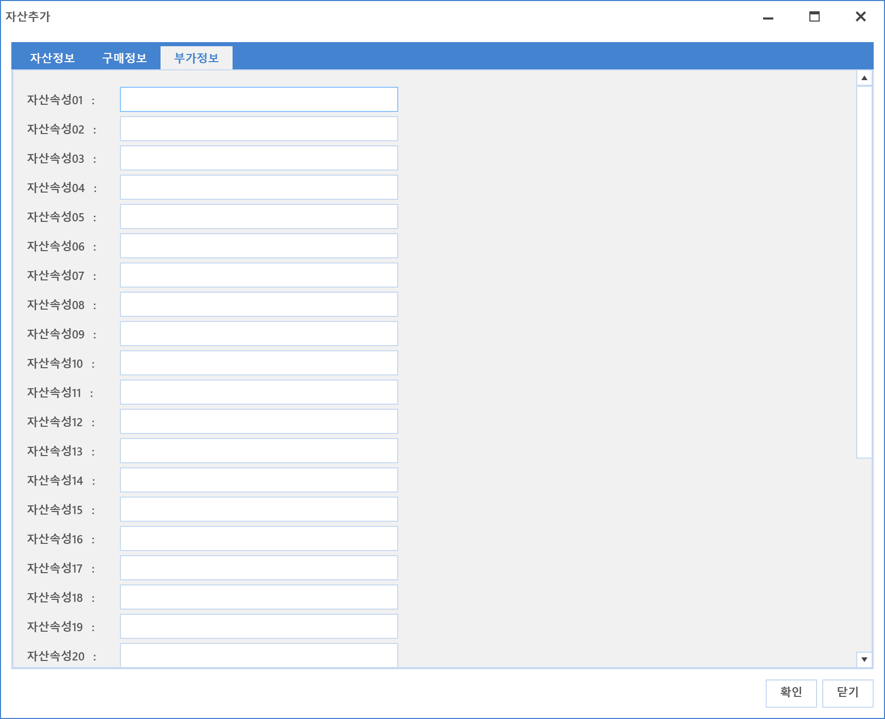
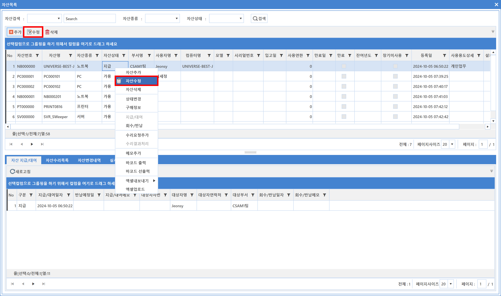
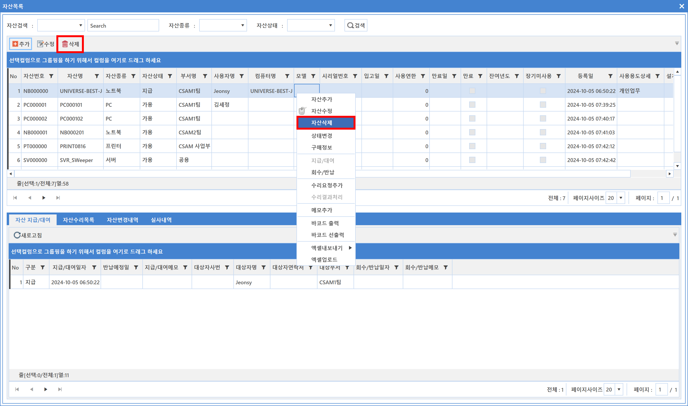
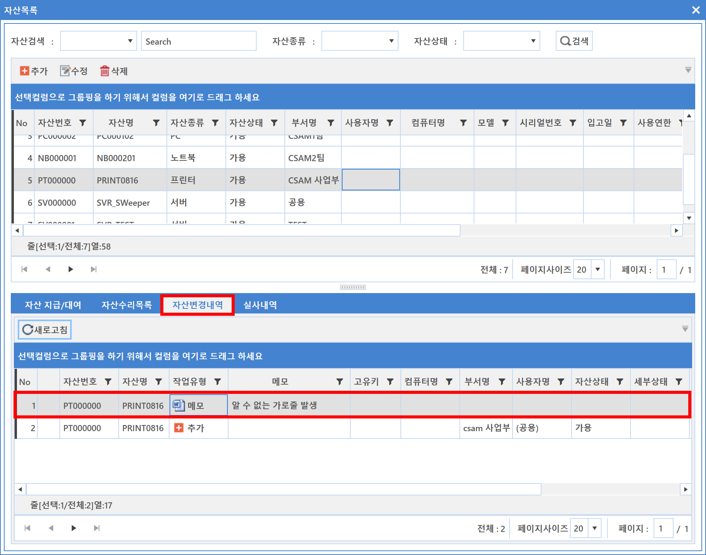
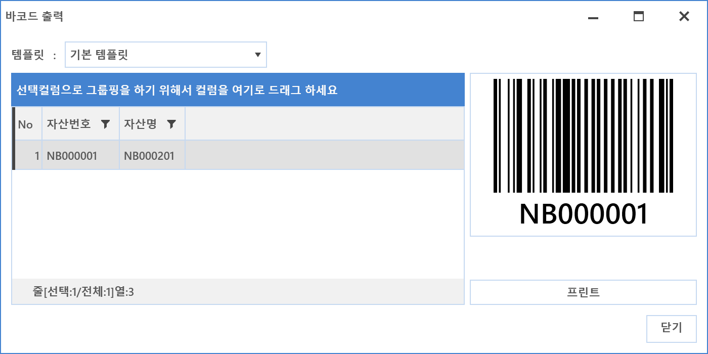
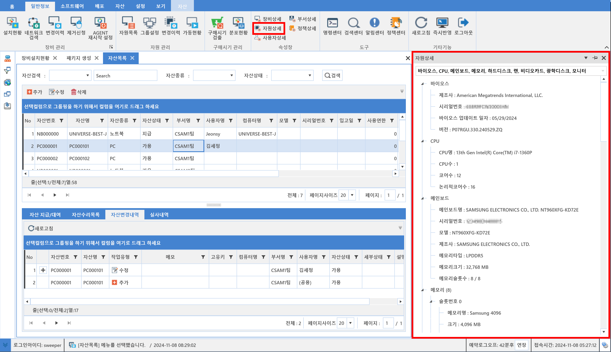

7-1-3. 자산목록
7-1-3. 자산목록
Source: https://www.sweeper.or.kr/etc/manual/713.html
7-1-3. 자산목록


자산관리 기본이 되는 화면으로 보유한 자산목록을 관리할 수 있는 메뉴입니다. 조직도를 기본으로 자산목록과 하단에 다양한 이력정보를 함께 확인할 수 있습니다.
자산상세 속성창과 함께 사용하면 관리 효율성이 높습니다. 자산관리의 자산상세 속성은 개별 자산의 많은 내용을 쉽게 확인할 수 있도록 다양한 정보를 제공합니다.

우클릭 메뉴 설명
- 자산목록 화면에서 특정 자산을 선택한 후 마우스 우클릭하면 다양한 메뉴가 나타납니다.

자산추가
- 추가 버튼을 클릭합니다. 자산상세 화면이 팝업되며 자산정보 Tab을 선택하여 해당 정보를 입력합니다.

- 자산종류 : 자산종류를 선택합니다. (자산종류에 따라 자산번호가 다르게 자동부여됩니다.)
-
자산번호 : 관리하고 있는 자산번호를 입력합니다.
-
관리하고 있는 자산번호가 없다면 생성 버튼을 클릭합니다. SWeeper에서 자산번호를 자동 생성하여 부여합니다. (생성 기준은 별도 협의 필요합니다.)
-
자산명 : 자산명칭을 입력합니다.
- 자산상태 : 추가는 신규 자산 등록이므로 가용으로 기본 표시됩니다.
- 세부상태 : 자산 세부 상태를 선택합니다.
- 수리상태 : 정상으로 기본 표시됩니다.
- 부서 : 자산 부서를 선택합니다.
- 장비 : 장비를 선택합니다.
- 모델 : 자산 모델을 입력합니다.
- 시리얼번호 : 자산 시리얼번호를 입력합니다.
- 사용용도 : 자산 사용용도를 선택합니다.
- 사용용도상세 : 사용용도 상세 정보를 입력합니다.
- 설치위치 : 자산 설치 위치를 선택합니다.
- 설치위치상세 : 자산 설치 위치 상세정보를 입력합니다.
- 등록일 : 등록하면 등록일자와 시간이 자동 입력됩니다.
- 비고 : 기타 필요한 정보를 입력합니다.
-
장비 사용자
-
자산을 장비와 매핑할 경우 장비의 사용자 정보가 나타납니다.
-
지급한 사용자와 실제 사용자를 비교하기 위해 사용됩니다.
-
자산 사용자
-
자산사용 구분 : 자산 사용 구분을 선택합니다.
- 사번 : 지급 사용자를 입력합니다.
- 사용자명 : 사번 입력 시 자동으로 표시됩니다.
- 부서 : 사번 입력시 자동으로 표시됩니다.
- 직위 : 사번 입력 시 자동으로 표시됩니다.
- 직책 : 사번 입력 시 자동으로 표시됩니다.
- 전화번호 : 사번 입력 시 자동으로 표시됩니다.
- 이메일 : 사번 입력 시 자동으로 표시됩니다.
-
상태 : 사번 입력 시 자동으로 표시됩니다.
-
구매정보 Tab을 선택합니다. 해당 정보를 입력합니다.

-
구매번호 : 매핑되는 구매자산을 찾아 선택합니다.
-
구매자산 선택시 입고번호, 입고일, 단가, 제조일, 감가상각방법, 사용연한은 자동 표시됩니다.
-
입고번호 : 자산 입고 번호를 입력합니다. (회사 내부 회계 정보에서 참고합니다.)
- 입고일 : 자산 입고일을 입력합니다.
- 단가 : 단가 정보를 입력합니다.
- 제조일 : 자산 제조일을 입력합니다.
-
감가상각방법 : 회사에서 사용중인 자산 감가상각방법을 선택합니다.
-
정액법 : 매년 같은 금액을 감가상각하는 방법입니다.
-
정률법 : 초기 감가상각을 하고 마지막에 가장 적은 감가상각을 하는 방법입니다.
-
사용연한 : 회사에서 지정한 사용연한을 입력합니다.
-
부가정보 Tab을 선택합니다. 해당 부가 정보를 입력합니다.

- 부가정보는 기본 제공 정보이외 추가 정보가 필요할 경우 사용되며 해당 명칭변경은 별도 협의가 필요합니다.
자산수정
- 상단의 수정버튼과 혹은 우클릭 자산수정을 이용해 자산 정보를 수정합니다.

- 멀티 선택후 수정도 가능합니다.

자산삭제
-
상단의 삭제버튼과 혹은 우클릭 자산삭제를 이용해 자산 정보를 수정합니다.
-

자산상태변경
- 자산상태를 변경하는 기능입니다.

구매변경
-
구매 번호를 매핑 하는 기능입니다.
-
다중 선택시에도 구매 번호 매핑 가능합니다.

자산지급/대여
- 자산/지급 대여 처리할 수 있는 기능입니다. 자세한 설정방법은 [지급/대여]내역을 참고하십시요.
자산회수/반납
- 자산회수/반납 처리할 수 있는 기능입니다. 자세한 설정방법은 [지급/대여]내역을 참고하십시요.
수리요청 추가
-
수리요청 추가 : 자산 수리요청을 추가할 수 있는 기능입니다.

-
신청자 : 수리 신청자를 선택합니다.
- 요청종류 : 요청종류를 선택합니다.

수리결과 처리
-
자산 수리요청을 완료처리할 수 있는 기능입니다.

-
수리업체 : 등록된 수리 업체를 선택합니다.
- 등록된 수리업체가 없을 경우 [거래처 목록]에서 추가합니다.
- 수리비용 : 수리에 발생된 비용을 입력합니다.
- 처리자 : 수리 처리자를 선택합니다.
- 처리유형 : 처리된 유형을 선택합니다.
- 처리내용 : 처리한 상제정보가 있을 경우 입력합니다.
메모추가
- 간단한 이슈정보를 추가할 수 있는 기능입니다.
- 추가한 메모는 자산변경내역에서 확인할 수 있습니다.

바코드 출력
- 바코드 정보를 출력할수 있도록 하는 기능이며, 바코드 프린터가 연동되어야만 합니다.

바코드 선출력
- 자산을 생성하기 전에 바코드 정보를 먼저 출력하는 기능으로 바코드 프린터가 연동되어 있어야 사용할 수 있습니다.
-
변수설정
-
추가로 출력하고자 하는 정보(변수)를 설정합니다. (부서명, 자산명, 자산종류 등)
- 단, [2-1-3. 자산] 의 출력내용 대로 바코드 출력이 되니 이곳에 해당 변수가 등록되어 있어야 합니다.

참고사항
- 자산목록은 [일반정보-자원상세] 속성창과 연동이 가능합니다.

주의사항
엑셀 업로드 양식에 맞아야 정상업로드 됩니다. 혹시 에러가 발생했다면 [엑셀 업로드 오류] 를 참고바랍니다.
© Copyright SWeeper Inc.. All Rights Reserved